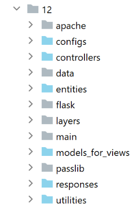
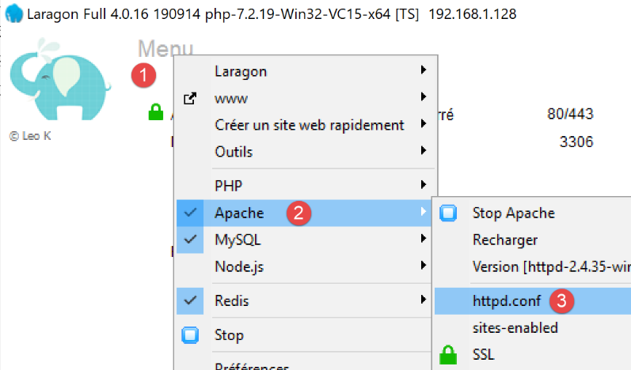
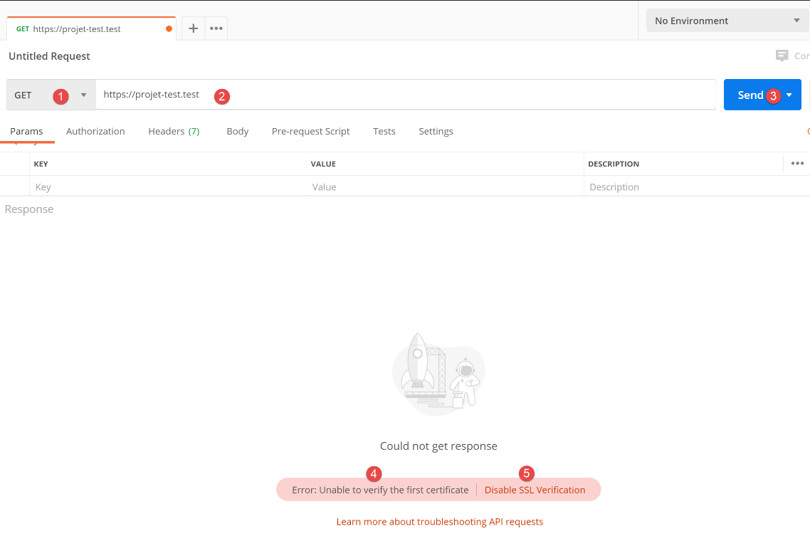
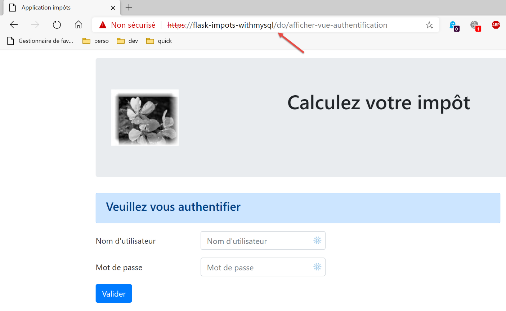
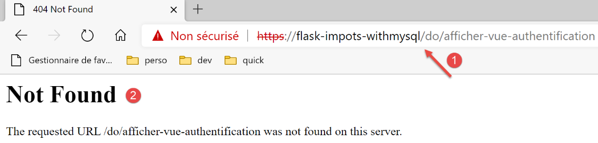

37. Practical Exercise: Version 17

This new version introduces the following changes:
- it will be ported to an Apache/Windows server;
- To perform this port, version 17 contains all the dependencies it needs in its [impots/http-servers/12] folder. Note that previous versions retrieved their dependencies from various folders throughout the entire [python-flask-2020] project;
37.1. Relocation of application dependencies

Note that application dependency management is handled in the [syspath] script. In the previous version, this script was as follows:
def configure(config: dict) -> dict:
import os
# directory of this file
script_dir = os.path.dirname(os.path.abspath(__file__))
# root path
root_dir = "C:/Data/st-2020/dev/python/cours-2020/python3-flask-2020"
# dependencies
absolute_dependencies = [
# project directories
# BaseEntity, MyException
f"{root_dir}/classes/02/entities",
# TaxDaoInterface, TaxBusinessInterface, TaxUiInterface
f"{root_dir}/taxes/v04/interfaces",
# AbstractTaxDao, TaxConsole, TaxBusiness
f"{root_dir}/taxes/v04/services",
# TaxDaoWithAdminDataInDatabase
f"{root_dir}/taxes/v05/services",
# AdminData, TaxError, TaxPayer
f"{root_dir}/impots/v04/entities",
# Constants, tax brackets
f"{root_dir}/taxes/v05/entities",
# Logger, SendAdminMail
f"{root_dir}/impots/http-servers/02/utilities",
# main script directory
script_dir,
# configurations [database, layers, parameters, controllers, views]
"{script_dir}/../configs",
# controllers
f"{script_dir}/../controllers",
# HTTP responses
f"{script_dir}/../responses",
# view models
f"{script_dir}/../models_for_views",
]
# Set the syspath
from myutils import set_syspath
set_syspath(absolute_dependencies)
# return the configuration
return {
"root_dir": root_dir,
"script_dir": script_dir
}
We need to relocate all dependencies whose absolute path depends on the [root_dir] variable in line 8, i.e., lines 13–26.
The [syspath] script for the new version will be as follows:
def configure(config: dict) -> dict:
import os
# directory of this file
script_dir = os.path.dirname(os.path.abspath(__file__))
# dependencies
absolute_dependencies = [
# application entities
f"{script_dir}/../entities",
# [DAO] layer
f"{script_dir}/../layers/dao",
# [business] layer
f"{script_dir}/../layers/business",
# utilities
f"{script_dir}/../utilities",
# main script directory
script_dir,
# configurations [database, layers, parameters, controllers, views]
f"{script_dir}/../configs",
# controllers
f"{script_dir}/../controllers",
# HTTP responses
f"{script_dir}/../responses",
# view templates
"{script_dir}/../models_for_views",
]
# Set the syspath
import sys
# add the project's absolute dependencies
for directory in absolute_dependencies:
# check if the directory exists
exists = os.path.exists(directory) and os.path.isdir(directory)
if not exists:
# Notify the developer
raise BaseException(f"[set_syspath] The Python Path directory [{directory}] does not exist")
else:
# add the directory to the beginning of the syspath
sys.path.insert(0, directory)
# restore the configuration
return {
"script_dir": script_dir,
}
- lines 8–27: all dependencies are now relative to the [script_dir] variable on line 5;
- lines 42–45: the [root_dir] variable has been removed from the syspath configuration;
- line 10: the application entities are in the [entities] folder [1];
- line 12: the [dao] layer is in the [layers/dao] folder [2];
- line 14: the [business] layer is in the [layers/business] folder [2];
- line 16: the [Logger, SendMail] utilities are in the [utilities] folder [3];
- lines 29–40: the application’s Python Path is calculated without importing the [myutils] module;

37.2. Tests
At this point, version 17 should work. Verify it.
37.3. Porting a Python/Flask application to an Apache/Windows server
37.3.1. Sources
To port a Flask application to Apache/Windows, I had to search the Internet. Here is the link that helped me get started: [https://medium.com/@madumalt/flask-app-deployment-in-windows-apache-server-mod-wsgi-82e1cfeeb2ed];
I used the information from this link except for the Apache server configuration. For that, I used a sample Apache server configuration from Laragon.
37.3.2. Installing the Python mod_wsgi module
The Python/Flask application we developed used the WSGI (Web Server Gateway Interface) server [werkzeug] included with Flask. This server is described |here|. The link [https://www.fullstackpython.com/wsgi-servers.html] describes how WSGI servers work. There are various |WSGI servers|. One of these is the Apache server running in WSGI mode. This is the solution adopted here because Laragon, which we installed, comes with an Apache server.
In order for the Apache server to host a Python application, we need to install the Python module [mod_wsgi]. Installing this module is tricky because it involves a C++ compilation. To complete the installation successfully, you need a Microsoft C++ compiler. A simple solution is to install the latest version of Visual Studio Community [https://visualstudio.microsoft.com/fr/vs/community/].
If you don’t need Visual Studio for anything other than [mod_wsgi], you can limit the installation to the C++ environment:

Once the C++ compiler is installed, the [mod_wsgi] module is installed in a PyCharm terminal:
(venv) C:\Data\st-2020\dev\python\cours-2020\python3-flask-2020\impots\http-servers\11>SET MOD_WSGI_APACHE_ROOTDIR=C:\MyPrograms\laragon\bin\apache\httpd-2.4.35-win64-VC15
(venv) C:\Data\st-2020\dev\python\cours-2020\python3-flask-2020\impots\http-servers\11>pip install mod_wsgi
Collecting mod_wsgi
Using cached mod_wsgi-4.7.1.tar.gz (498 kB)
Using legacy setup.py install for mod-wsgi, since the 'wheel' package is not installed.
Installing collected packages: mod-wsgi
Running setup.py install for mod-wsgi ... done
Successfully installed mod-wsgi-4.7.1
- Line 1: We set the value of the [MOD_WSGI_APACHE_ROOTDIR] environment variable. This value is the location of the Apache server in the file system. Here, this location is [<laragon>\bin\apache\httpd-2.4.35-win64-VC15], where <laragon> is the Laragon installation folder. You can obtain this location in various ways. Here is one obtained using one of Laragon’s options:

In [1-3], the [httpd.conf] file is the main configuration file for the Apache server. The file in question is then opened in a text editor (Notepad++ below):

In [2], the Apache installation folder is the part preceding the string [conf\httpd.conf].
Let’s return to the installation of the [mod_wsgi] module:
- Lines 3–9: installation of the [mod_wsgi] module;
37.3.3. Configuring the Laragon Apache Server
We will configure the Laragon Apache server. We start with its main configuration file [httpd.conf]:
We go to the end of the [httpd.conf] file:
…
IncludeOptional "C:/MyPrograms/laragon/etc/apache2/alias/*.conf"
IncludeOptional "C:/MyPrograms/laragon/etc/apache2/sites-enabled/*.conf"
Include "C:/MyPrograms/laragon/etc/apache2/httpd-ssl.conf"
Include "C:/MyPrograms/laragon/etc/apache2/mod_php.conf"
# Python mod_wsgi
LoadModule wsgi_module "c:/data/st-2020/dev/python/cours-2020/python3-flask-2020/venv/lib/site-packages/mod_wsgi/server/mod_wsgi.cp38-win_amd64.pyd"
- Line 8 has been added to the existing [httpd.conf] file at the end of the file. It tells the Apache server where to find a component of the [mod_wsgi] module that we just installed;
An easy way to get the path for line 8 is to run the following command in a PyCharm terminal:
(venv) C:\Data\st-2020\dev\python\cours-2020\python3-flask-2020\impots\http-servers\11>mod_wsgi-express module-config
LoadModule wsgi_module "c:/data/st-2020/dev/python/cours-2020/python3-flask-2020/venv/lib/site-packages/mod_wsgi/server/mod_wsgi.cp38-win_amd64.pyd"
WSGIPythonHome "c:/data/st-2020/dev/python/cours-2020/python3-flask-2020/venv"
Some documentation states that lines 2 and 3 should be added to the end of the [httpd.conf] file. In my case, line 3 above caused an error (missing [encodings] module). Therefore, it was not included in the [httpd.conf] file. Only line 2 was added. The meanings of the various [mod_wsgi] module parameters that can be used in Apache configuration files are described |here|.
Next, we will enable the HTTPS protocol on the Apache server:

- In [1-4], we enable the HTTPS protocol on the Apache server;
From now on, we will be able to use [https://serveur/chemin] URLs;
To configure Apache to serve a Flask application, the link referenced |above|uses virtual hosts. Laragon also offers virtual host management:

- In [1-3], we ask Laragon to automatically create virtual hosts;
The next step is to create a web project with Laragon:
 |
 |  |
- In [1-3], create an empty PHP project;
- In [4-8], Laragon has created a virtual site named [auto.projet-test.test] configured by the file [auto.projet-test.test.conf] [8] in the [sites-enabled] folder [7]. This folder is located at [<laragon>\etc\apache2\sites-enabled], where [laragon] is Laragon’s installation folder;
Although this is not part of what we are doing right now, you might be curious to check out the [test-project] website we just created:

- In [1-5], an empty project was created. It is a PHP project located in the [<laragon>/www] folder, where [laragon] is the Laragon installation folder;
Now let’s examine the [auto.projet-test.test.conf] file generated by Laragon in the [<laragon>\etc\apache2\sites-enabled] folder:
define ROOT "C:/MyPrograms/laragon/www/test-project/"
define SITE "test-project.test"
<VirtualHost *:80>
DocumentRoot "${ROOT}"
ServerName ${SITE}
ServerAlias *.${SITE}
<Directory "${ROOT}">
AllowOverride All
Require all granted
</Directory>
</VirtualHost>
<VirtualHost *:443>
DocumentRoot "${ROOT}"
ServerName ${SITE}
ServerAlias *.${SITE}
<Directory "${ROOT}">
AllowOverride All
Require all granted
</Directory>
SSLEngine on
SSLCertificateFile C:/MyPrograms/laragon/etc/ssl/laragon.crt
SSLCertificateKeyFile C:/MyPrograms/laragon/etc/ssl/laragon.key
</VirtualHost>
- line 1: the root directory of the created project in the file system;
- line 2: the name of the virtual server. URLs for this server will be in the form [http(s)://test-project.test/path];
- lines 4–12: configuration of the virtual site for port 80 (line 4) and the HTTP protocol;
- lines 14–27: configuration of the virtual host for port 443 (line 14) and the HTTPS protocol;
Let’s see how a virtual server works. First, let’s start the Apache and PHP servers:

Then, using a browser, we request the URL [http://projet-test.test/]:

- in [1], the requested URL;
- in [2], the HTTP protocol was used;
- in [3], because the [projet-test] project is empty, we get the index of its folder (list of its contents), an empty index;
Now let’s request the secure URL [https://projet-test.test/]:

- In [1-2], we get the same response as before, but using the HTTPS protocol [1];
Creating the virtual server [test-project.test] created a new entry in the file [<windows>/system32/drivers/etc/hosts]:

- Line 23: The IP address for the name [test-project.test] is 127.0.0.1, i.e., the address of [localhost] (line 20), the local machine. So when you type the URL [http://projet-test.test/chemin] into a browser, the request is sent to the address 127.0.0.1 on port 80. The Apache server on the local machine (localhost) then responds.
You might wonder why, when you type the request [http://projet-test.test/], the Apache server uses the configuration from the file [<laragon>\etc\apache2\sites-enabled\auto.projet-test.test.conf]:

To understand this, we need to see what the browser sends to the Apache server when making this request. Let’s do this with Postman:

- In [1-3], we send an HTTPS request [1];
- in [4], Postman indicates that it did not recognize the security certificate. The HTTPS protocol establishes an encrypted connection between the web client (here, Postman) and the Apache server. This encrypted connection is established through certificates exchanged between the client and the server. It is the server that initiates the process of establishing the encrypted connection by sending a security certificate to the client. For this certificate to be accepted by the client, it must be signed—in other words, purchased from companies authorized to issue security certificates. When we enabled Laragon’s HTTPS protocol, Laragon created the security certificate itself. The certificate is then said to be self-signed. Most web clients issue a warning when they receive a self-signed certificate. This is what Postman does in [4]. Most web clients then offer to disable verification of the security certificate sent by the server. This is what Postman offers in [5];
We click on the link [5] to disable SSL (Secure Sockets Layer) verification. SSL/TLS (Transport Layer Security) is a security protocol that creates a secure communication channel between two machines on the internet. This is the protocol used here by Apache. The response is as follows:

We receive the same page as with a traditional browser. Now let’s look at the client/server dialogue in the Postman console (Ctrl-Alt-C):
- Line 6: The HTTP [Host] header specifies the name of the server targeted by the web client. This is the principle behind virtual servers. At a single IP address (here 127.0.0.1), a web server can host multiple websites with different names. The HTTP [Host] header allows the client to specify which server (here, the one at address 127.0.0.1) it is addressing;
So what does Apache do?
When it starts up, Apache reads all configuration files found in the [[<laragon>\etc\apache2\sites-enabled]] directory:
Each configuration file defines a virtual server. For example, in the file [auto.projet-test.test.conf], you will find the following line:
define ROOT "C:/MyPrograms/laragon/www/test-project/"
define SITE "test-project.test"
…
Line 2 defines the [test-project.test] virtual server. The [auto.projet-test.test.conf] file is the configuration for this virtual server. Because it reads all configuration files in the [<laragon>\etc\apache2\sites-enabled] folder at startup, the Apache server knows that a virtual server named [projet-test.test] exists. Thus, when it receives the following HTTPS request from the Postman client:
It recognizes that the request is addressed to the virtual server [test-project.test] (line 6) and that it exists. It then uses the configuration of the virtual server [test-project.test] to respond to the Postman client.
37.4. Creating Your First Apache Virtual Server
Now that we know what virtual servers are used for and how to configure them, we’ll create one. It will be used to run a Python Flask application installed in an [Apache] folder of version 17 currently being deployed on the Apache server:
We have placed the application developed in the section |link|—a date/time web service—in the [http-servers/12/apache/example] folder:

The [date_time_server.py] server is as follows:
# imports
import os
import sys
import time
# We need to add the module folder to the Python Path
# for porting to Apache on Windows
sys.path.insert(0, "C:/Data/st-2020/dev/python/cours-2020/python3-flask-2020/venv/lib/site-packages")
from flask import Flask, make_response, render_template
# Flask application
script_dir = os.path.dirname(os.path.abspath(__file__))
application = Flask(__name__, template_folder=f"{script_dir}")
# Home URL
@application.route('/')
def index():
# send time to client
# time.localtime: number of milliseconds since 01/01/1970
# time.strftime formats the time and date
# date-time display format
# d: day as two digits
# m: 2-digit month
# y: 2-digit year
# H: hour (0–23)
# M: minutes
# S: seconds
# current date and time
time_of_day = time.strftime('%d/%m/%y %H:%M:%S', time.localtime())
# Generate the document to send to the client
page = {"date_time": time_of_day}
document = render_template("date_time_server.html", page=page)
print("document", type(document), document)
# HTTP response to the client
response = make_response(document)
print("response", type(response), response)
return response
# main only
if __name__ == '__main__':
application.config.update(ENV="development", DEBUG=True)
application.run()
The Flask application is referenced by the identifier [application] (lines 14, 43, 44). This name is required. If you reference the Flask application with a different identifier, the application will not work and will display an error message indicating that it cannot find the requested URL. This error message provides no indication of the source of the error. You must therefore be careful about this.
The HTML file referenced on line 34 is as follows:
<!DOCTYPE html>
<html lang="fr">
<head>
<meta charset="UTF-8">
<title>Current date and time</title>
</head>
<body>
<b>Current date and time: {{page.date_time}}</b>
</body>
</html>
- [date-time-server] will be the virtual server hosting this application. It will be configured via the file [<laragon>\etc\apache2\sites-enabled\date-time-server.conf] (note that this name is arbitrary—Apache reads all files in [sites-enabled] to discover the hosted virtual sites);
We first obtain this file by copying the [auto.projet-test.test.conf] file and then modify it.

The [date-time-server.conf] file will look like this:
# directory of the application's Python-Flask script
define ROOT "C:/Data/st-2020/dev/python/cours-2020/python3-flask-2020/impots/http-servers/12/apache/example"
# name of the website configured by this file
# here it will be called date-time-server
# URLs will be of the form http(s)://date-time-server/path
define SITE "date-time-server"
# Add the IP address 127.0.0.1 for the SITE website to c:/windows/system32/drivers/etc/hosts
# HTTP URL
<VirtualHost *:80>
# With the alias, URLs will be in the format http(s)://date-time-server/path/...
WSGIScriptAlias / "${ROOT}/date_time_server.py"
DocumentRoot "${ROOT}"
ServerName ${SITE}
ServerAlias *.${SITE}
<Directory "${ROOT}">
AllowOverride All
Require all granted
</Directory>
</VirtualHost>
# Secure URLs with HTTPS
<VirtualHost *:443>
# with the alias, URLs will be in the form http(s)://date-time-server/path/...
WSGIScriptAlias / "${ROOT}/date_time_server.py"
DocumentRoot "${ROOT}"
ServerName ${SITE}
ServerAlias *.${SITE}
<Directory "${ROOT}">
AllowOverride All
Require all granted
</Directory>
SSLEngine on
SSLCertificateFile C:/MyPrograms/laragon/etc/ssl/laragon.crt
SSLCertificateKeyFile C:/myprograms/laragon/etc/ssl/laragon.key
</VirtualHost>
- Line 7: Give a name to the virtual server configured by the file;
- line 2: sets the value of the [ROOT] variable used on lines 14 and 27;
- Lines 14 and 27: Specify the path to the Python script that must be executed when the virtual server receives a request. Here, we specify that requests for the [date-time-server] server are handled by the Python script [date_time_server.py]. This difference from the [auto.projet-test.test.conf] file stems from the fact that the former configured a PHP server, whereas the [date-time-server.conf] file configures a Python server;
- Lines 14 and 27: The [WSGIScriptAlias /] attribute specifies here that the root of the [date-time-server] server will be [/]. Thus, the application’s URLs will take the form [http(s)://date-time-server/path];
- Lines 14 and 27: We can assign a different root to the application, for example [WSGIScriptAlias /show]. In this case, the application’s URLs will take the form [http(s)://show/date-time-server/path];
We also need to add a line to the [<windows>/system32/drivers/etc/hosts] file:
We add line 25 to assign the IP address [127.0.0.1] to the virtual server [date-time-server].
Let’s check everything. We start the Apache server:
Next, we request the URL [https://date-time-server] using a browser:

- in [1], the requested URL;
- in [3], the server’s response;
- in [2], the browser indicates that the HTTPS connection is not secure because it detected that the certificate sent by the Apache server was self-signed;
Now, in the [date-time-server.conf] file, let’s add an alias to lines 14 and 27:
WSGIScriptAlias /show-date-time "${ROOT}/date_time_server.py"
The change is not immediately recognized by the Apache server. You must reload it:

We then request the URL [https://date-time-server/show-date-time]. The server’s response is as follows:

37.5. Porting the tax calculation application to Apache / Windows
The [apache] directory [2] is initially created by copying the [main] directory. It is important that they are at the same level so that the paths in the [syspath.py] script copied from [1] to [2] remain valid. To avoid interfering with the working [impots / http-servers/ 12] application, we place the configuration to be executed by the Apache server in [apache];

- the [config] file in [2] is the same as the [config] file in [1];
- the [syspath] file in [2] is the same as the [syspath] file in [1];
- the [main_withmysql] file in [2] is the [main] file from [1] with the following modifications:
The main script [main] received a [mysql / pgres] parameter that told it which DBMS to use. The [main_withmysql] script uses the MySQL DBMS:
# expects a parameter mysql or pgres
import os
import sys
# configure the application with MySQL
import config
config = config.configure({'dbms': "mysql"})
# dependencies
from SendAdminMail import SendAdminMail
from Logger import Logger
from ImpôtsError import ImpôtsError
…
Line 7 sets the DBMS to MySQL.
- The [main_withpgres] file from [2] is the [main] file from [1] with the following changes: it uses the PostgreSQL DBMS:
# we expect a parameter of type mysql or pgres
import os
import sys
# Configure the application with MySQL
import config
config = config.configure({'dbms': "pgres"})
# dependencies
from SendAdminMail import SendAdminMail
from Logger import Logger
from ImpôtsError import ImpôtsError
…
On line 7, we set the DBMS to PostgreSQL.
Once this is done, we create the following script [main_withmysql.wsgi] (the suffix used does not matter):
# directory of this file
import os
script_dir = os.path.dirname(os.path.abspath(__file__))
# Add it to the syspath so that the following import is possible
import sys
sys.path.insert(0, script_dir)
# import the Flask application [app] and give it the name [application]
from main_withmysql import app as application
The script [main_withmysql.wsgi] will be the target executed by the Apache server in WSGI mode:
- The Apache server’s target could have been the script [main_withmysql.py], as was done previously with the script [date_time_server.py]. But it would have required a slight modification:
- unlike when running a console script, with Apache, the directory containing the target [main_withmysql.py] is not part of the Python Path. Therefore, line 6 of the [main_withmysql.py] script causes an error;
- the second change that would have been necessary is that in [main_withmysql], the Flask application is referenced by the identifier [app]. We know that for Apache/WSGI, it must also be referenced by an identifier [application];
- Instead of modifying [main_withmysql.py], we change the Apache target. It will now be the [main_withmysql.wsgi] script above:
- lines 1–7: we add the script’s directory to the Python Path. As a result, line 6 of [main_withmysql.py] no longer causes an error;
- lines 9–10: importing [main_withmysql.py] triggers its execution. Additionally, we reference the Flask application [app] found in [main_withmysql.py] using the [application] identifier required by Apache in WSGI mode;
We do the same with the [main_withpgres.wsgi] script:
# directory of this file
import os
script_dir = os.path.dirname(os.path.abspath(__file__))
# we add it to the syspath so that the following import is possible
import sys
sys.path.insert(0, script_dir)
# import the Flask application [app] and give it the name [application]
from main_withpgres import app as application
We now have the executable targets for the Apache server. We now need to create two virtual servers, one for each target.
In [<laragon>\etc\apache2\sites-enabled], we create the file [flask-impots-withmysql.conf] (the name doesn’t matter):

# .wsgi script directory
define ROOT "C:/Data/st-2020/dev/python/cours-2020/python3-flask-2020/impots/http-servers/12/apache"
# name of the website configured by this file
# here it will be called flask-impots-withmysql
# URLs will be of the form http(s)://flask-impots-withmysql/path
define SITE "flask-impots-withmysql"
# Add the IP address 127.0.0.1 for the SITE "flask-impots-withmysql" to c:/windows/system32/drivers/etc/hosts
# Enter the paths to the Python libraries to be used here—separate them with commas
# Here are the libraries for a Python virtual environment
WSGIPythonPath "C:/Data/st-2020/dev/python/cours-2020/python3-flask-2020/venv/lib/site-packages"
# Python Home - required only if multiple versions of Python are installed
# WSGIPythonHome "C:/Program Files/Python38"
# HTTP URL
<VirtualHost *:80>
# With the alias, URLs will take the form /{url_prefix}/action/...
# with the alias /taxes, URLs will take the form /taxes/{url_prefix}/action/...
# where [url_prefix] is defined in parameters.py
WSGIScriptAlias / "${ROOT}/main_withmysql.wsgi"
DocumentRoot "${ROOT}"
ServerName ${SITE}
ServerAlias *.${SITE}
<Directory "${ROOT}">
AllowOverride All
Require all granted
</Directory>
</VirtualHost>
# Secure URLs with HTTPS
<VirtualHost *:443>
# With the alias, URLs will be in the form /{url_prefix}/action/...
# with the alias /taxes, URLs will be in the form /taxes/{url_prefix}/action/...
# where [url_prefix] is defined in parameters.py
WSGIScriptAlias / "${ROOT}/main_withmysql.wsgi"
DocumentRoot "${ROOT}"
ServerName ${SITE}
ServerAlias *.${SITE}
<Directory "${ROOT}">
AllowOverride All
Require all granted
</Directory>
SSLEngine on
SSLCertificateFile C:/MyPrograms/laragon/etc/ssl/laragon.crt
SSLCertificateKeyFile C:/myprograms/laragon/etc/ssl/laragon.key
</VirtualHost>
- line 2: the application root, the [apache] folder we created;
- lines 23, 38: the target [main_withmysql.wsgi] that we created:
- line 7: the virtual server will be named [flask-impots-withmysql];
- line 13: the [WSGIPythonPath] directive allows us to add folders to the Python Path. Here, Apache is unaware that we used a virtual environment to develop the application and that all modules used by the application are in that virtual environment. Therefore, on line 13, we add the folder containing all modules from the virtual environment used. One option is to copy this directory to another location in the file system and reference that location. Another option is to add this directory to the Python Path directly within the [main_withmysql.wsgi] target (this is likely a better solution);
- line 16: we can specify the Python installation directory in the file system to Apache. Normally, this is in the machine’s PATH, and often this line is unnecessary (which was the case here). However, there may be multiple Python installations on the machine, and the desired one may not be in the machine’s PATH. In that case, this line resolves the issue;
Similarly, create a [flask-impots-withpgres.conf] file:
# .wsgi script directory
define ROOT "C:/Data/st-2020/dev/python/cours-2020/python3-flask-2020/impots/http-servers/12/apache"
# name of the website configured by this file
# here it will be called flask-impots-withmysql
# URLs will be of the form http(s)://flask-impots-withmysql/path
define SITE "flask-impots-withpgres"
# Add the IP address 127.0.0.1 for the SITE in c:/windows/system32/drivers/etc/hosts
# Enter the paths to the Python libraries to be used here—separate them with commas
# Here are the libraries for a Python virtual environment
WSGIPythonPath "C:/Data/st-2020/dev/python/cours-2020/python3-flask-2020/venv/lib/site-packages"
# Python Home - required only if multiple versions of Python are installed
# WSGIPythonHome "C:/Program Files/Python38"
# HTTP URL
<VirtualHost *:80>
# With the alias, URLs will take the form /{url_prefix}/action/...
# with the alias /taxes, URLs will be in the form /taxes/{url_prefix}/action/...
# where [url_prefix] is defined in parameters.py
WSGIScriptAlias / "${ROOT}/main_withpgres.wsgi"
DocumentRoot "${ROOT}"
ServerName ${SITE}
ServerAlias *.${SITE}
<Directory "${ROOT}">
AllowOverride All
Require all granted
</Directory>
</VirtualHost>
# Secure URLs with HTTPS
<VirtualHost *:443>
# With the alias, URLs will be in the form /{url_prefix}/action/...
# with the alias /taxes, URLs will be in the form /taxes/{url_prefix}/action/...
# where [url_prefix] is defined in parameters.py
WSGIScriptAlias / "${ROOT}/main_withpgres.wsgi"
DocumentRoot "${ROOT}"
ServerName ${SITE}
ServerAlias *.${SITE}
<Directory "${ROOT}">
AllowOverride All
Require all granted
</Directory>
SSLEngine on
SSLCertificateFile C:/MyPrograms/laragon/etc/ssl/laragon.crt
SSLCertificateKeyFile C:/myprograms/laragon/etc/ssl/laragon.key
</VirtualHost>
We save all these files, start the Apache server and the MySQL and PostgreSQL databases. The application is configured with the URL prefix [/do] and [with_csrftoken=False] (no CSRF token) in [configs/parameters.py]. We request the URL [https://flask-impots-withmysql/do]. The server’s response is as follows:

We now request the URL [https://flask-impots-pgres/do]. The response is as follows:

Both applications are working normally.
Now let’s modify the [WSGIScriptAlias] parameter in [flask-impots-withmysql.conf]:
# .wsgi script directory
define ROOT "C:/Data/st-2020/dev/python/cours-2020/python3-flask-2020/impots/http-servers/12/apache"
…
# HTTP URL
<VirtualHost *:80>
# With the alias, URLs will be in the form /{url_prefix}/action/...
# with the alias /impots, URLs will be in the form /impots/{url_prefix}/action/...
# where [url_prefix] is defined in parameters.py
WSGIScriptAlias /taxes "${ROOT}/main_withmysql.wsgi"
…
</VirtualHost>
# Secure URLs with HTTPS
<VirtualHost *:443>
# With the alias, URLs will be in the form /{url_prefix}/action/...
# with the alias /taxes, URLs will be in the form /taxes/{url_prefix}/action/...
# where [url_prefix] is defined in parameters.py
WSGIScriptAlias /taxes "${ROOT}/main_withmysql.wsgi"
…
</VirtualHost>
- lines 11 and 20, the WSI alias is now [/impots];
We stop and restart the Apache server, then request the URL [https://flask-impots-withmysql/impots/do]. The server’s response is as follows:

There is a crash. The URL [1] tells us the cause. It should have been [https://flask-impots-withmysql/impots/do/afficher-vue-authentification]. The WSGI alias is missing. This is an error in our application. It knows how to handle a URL prefix (/do is present). One might think that adding the prefix [/impots/do] to our application would solve the previous problem. But no. We then encounter other types of problems. The WSGI alias does not behave like a URL prefix.
Let’s try to understand what happened. We requested the URL [https://flask-impots-withmysql/impots/do]. We expected to see the authentication view. In [1] above, we see that the application requested to display it, but not with the correct URL. Let’s examine the path of the request [https://flask-impots-withmysql/impots/do].
First, the following route (configs/routes.py) was executed:
# Flask application routes
# application root
app.add_url_rule(f'{prefix_url}/', methods=['GET'],
view_func=routes.index)
The route on line 3 is [https://flask-impots-withmysql/impots/do] in our example. We can see that the route has been stripped of the [https://flask-impots-withmysql/impots] part to become simply [/do]. As for the [https://flask-impots-withmysql] part, this is normal; the server name is not included in the route. But we can see that it also does not include the WSGI alias [/impots]. This is an important point. Even with a WSGI alias, our initial routes remain valid.
Now let’s see what the [index] function on line 4 (configs/routes_without_csrftoken) does:
# application root
def index() -> tuple:
# redirect to /init-session/html
return redirect(url_for("init_session", type_response="html"), status.HTTP_302_FOUND)
On line 4, we are redirected to the URL of the [init_session] function. In [configs/routes.py], this function has been associated with the route [/do/init-session/html]:
# init-session
app.add_url_rule(f'{prefix_url}/init-session/<string:type_response>{csrftoken_param}', methods=['GET'],
view_func=routes.init_session)
Line 2: In our test, [csrftoken_param] is the empty string. The application does not handle a CSRF token here.
The [init_session] function is defined as follows (configs/routes_without_csrftoken):
# init-session
def init_session(type_response: str) -> tuple:
# execute the controller associated with the action
return front_controller()
Line 4: We start the action processing chain [init-session]. This chain ends as follows in [responses/HtmlResponse]:
…
# now we need to generate the redirect URL, making sure to include the CSRF token if required
if config['parameters']['with_csrftoken']:
csrf_token = f"/{generate_csrf()}"
else:
csrf_token = ""
# Redirect response
return redirect(f"{config['parameters']['prefix_url']}{ads['to']}{csrf_token}"), status.HTTP_302_FOUND
The [init-session] action is an ADS (Action Do Something) action that ends with a redirect to a view, line 9. That is where the problem lies. The [redirect] function on line 9 does not automatically add the WSGI alias to the redirect URL. This is shown in the screenshot above. The /impots alias is missing from the redirect URL.
The following version provides a solution to the WSGI alias problem.